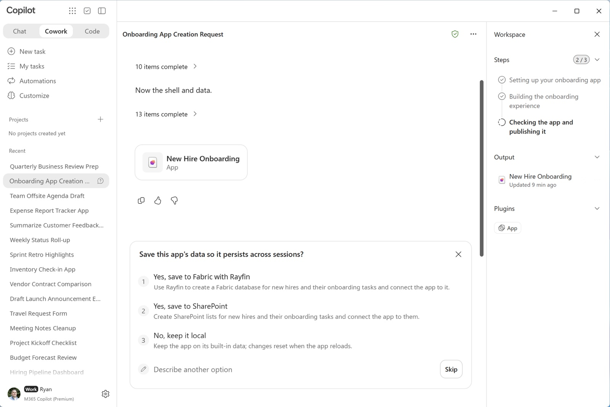
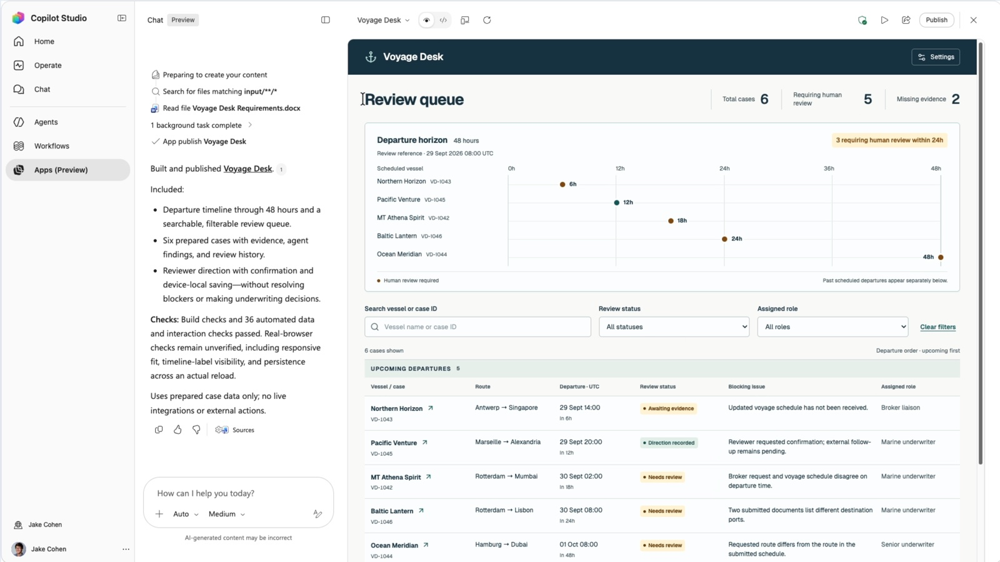
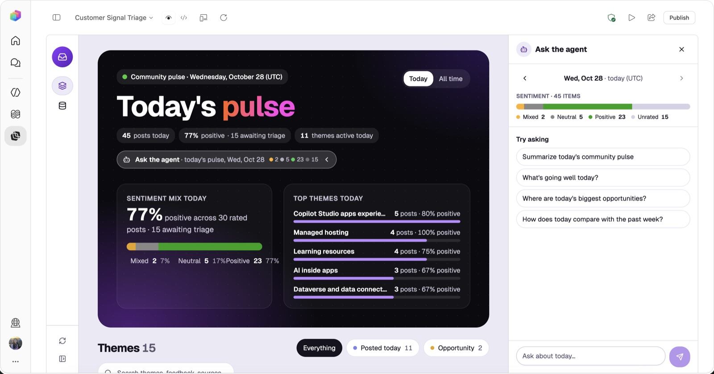

连接器驱动的数据交互层
预置超 1,500 个连接器直连 Dataverse、SQL、Fabric、SharePoint 与 Outlook 等动作服务，同时支持挂载任意自定义接口；构建阶段更可直接调用 Dataverse 插件自动建表与演进表结构 [1][2]。
2026 年 11 月 17 日，Copilot 托管运行时（Copilot Managed Runtime）在 Microsoft Ignite 大会正式全面商用（GA），终结了自然语言生成应用停留在本地端口却无法进入企业生产环境的断层 [1][2]。本场 BRK378 由产品总经理 Clay Wesener、首席产品经理 Emma Cooper 与 Lovable 产品经理 Malavika Balachandran Tadeusz 联袂主讲，完整拆解五大构建入口如何共享单一 Git 远程源码库、挂载超 1,500 个受管连接器与 Fabric 持久底座，并在 Microsoft 365 管理中心内落地连接器动作级白名单、内容安全策略与额度预算护栏 [1][2]。
01 / Runtime Architecture & Session Theater
企业员工利用生成式工具编写内部应用时，最常见的工程挫败并非写不出前端界面，而是原型跑在个人电脑的本地端口上，既无企业目录鉴权，也无法通过合规审查部署上线 [1]。Clay Wesener 在 BRK378 开场指出，团队在准备演示时混合使用了协同画布（Cowork）、Copilot Studio、命令行工具与多款前沿大模型（涵盖 OpenAI 与 Claude Opus 等），但产出的每一款应用都彻底告别了 localhost 地址 [1][2]。只要应用发布至 2026 年 11 月 17 日正式商用的 Copilot 托管运行时（Copilot Managed Runtime），系统便会自动为其绑定 Microsoft Entra 安全认证、创建后台 Git 远程源码仓库，并实时登记至 Microsoft 365 管理中心 [1][2]。
更关键的机制在于构建期策略前置感知 [1]。传统影子开发往往在耗费大量算力额度写完应用后，才在上线审批时因触碰禁用数据源而被迫推翻重来 [1]。在托管运行时体系下，管理员在管理中心设定的环境组路由、连接器准入范围与共享限制会直接注入构建智能体的上下文；智能体在动笔生成代码前便已知晓组织红线，从源头避免无效的词元与点数消耗 [1][3]。
下方官方专场点播导览台整合了 BRK378 全长 45 分钟的微软官方流媒体播放器、原版幻灯片直链与四段实机演示时间轴，点击顶部阶段标签即可对照查阅 [1]：
切换架构定调、Cowork/Studio 实机、Lovable 三方集成与 CLI/管理中心四段议程，支持在页内直接加载微软官方点播流。
随同托管运行时本体正式商用，微软在 11 月 17 日同步解锁了跨角色扩展能力矩阵 [1][2]：其一，**本地构建与 Git 源码化智能体及工作流（公开预览）**支持创作者在本地机器与自选开发工具中构建 Copilot Studio 智能体与工作流，通过 GitHub 等源码平台做版本控制后再发布回云端 [2]；其二，**全代码智能体（早期访问预览）**允许开发者自带模型、编排器或运行内核编写纯代码智能体并直接跑在托管运行时上，无需在 Azure 中做任何额外配置即可默认打通 Agent 365 [2]；其三，**Microsoft Fabric 数据库开箱集成（前沿预览）**让需要跨会话持久化的应用一键调用代号为 Rayfin 的能力创建托管数据库、存储与数据接口，而无需自行运维后端服务器 [1][2]。
02 / In-Flow Intelligent Apps
在日常办公流中，业务团队往往把关键项目进度散落在会议纪要、演示文稿与多张电子表格里，手工同步极易过期失真 [1]。Emma Cooper 在第一幕实机演示中展示了如何零上下文切换地把静态文档升级为受管交互应用：在 **Copilot 协同画布（Cowork，现已正式商用）**内输入构建诉求后，应用构建技能会直接调取 Work IQ 组织图谱上下文——自动识别刚开完的升级复盘会、Loop 协作组件、团队成员名单与企业视觉规范，几分钟内生成《2026 年第四季度 Atlas 项目路线图》应用 [1][2]。原本死板躺在表格行里的交付物变成了可筛选、可下钻改期并按 Office 文档习惯一键复制组织链接共享的鲜活系统 [1]。
插件与可复用技能进一步放大了工作流内构建的上限 [1]。创作者不仅能编写并共享“应用使用手册自动生成技能”，还能直接调用 Figma 设计插件——只需粘贴设计团队打磨好的蓝调图表界面链接，智能体便会读取设计规范并绑定真实业务数据源，在几分钟内交付像素高度还原且受组织策略纳管的可交互应用 [1]。当应用需要跨会话保存数据时，系统会主动弹出持久化引导卡片，供创作者在“通过 Rayfin 保存至 Fabric 数据库”、“创建 SharePoint 列表”或“仅保留会话内本地演示数据”之间一键抉择 [2]。
预置超 1,500 个连接器直连 Dataverse、SQL、Fabric、SharePoint 与 Outlook 等动作服务，同时支持挂载任意自定义接口；构建阶段更可直接调用 Dataverse 插件自动建表与演进表结构 [1][2]。
针对无需多轮工具编排的即时态势感知（如巡检看板顶部的“今日风险概览”），直接在前端视图中嵌入单次大模型提示词函数，以极低时延提炼当前筛选窗口下的核心待办 [1]。
针对跨表关联与复杂合规规程，将已发布的 Copilot Studio 专职智能体嵌入应用专属交互侧栏；告别“静态表单等指令”旧范式，让应用理解意图、主动推理并给出整改动作建议 [1][2]。
切入面向端到端业务流程改造的 **Copilot Studio（应用构建现已正式商用）**后，Emma 现场展示了 Gauge 现场巡检分析应用（Gauge Field Inspections） [1]。该应用底层通过 Dataverse 插件自动构建巡检结果表，主屏实时渲染合格率走势、高频复发缺陷与故障热力图；右侧则内嵌定制对话界面直连已发布的 Gauge 风险顾问智能体（Gauge Risk Advisor Agent） [1]。当巡检主管追问“北场（North Yard）有哪些逾期未闭环的整改动作”时，智能体即刻检索 Dataverse 台账与安全作业规程知识库返回精准处置清单，与顶部的轻量行内风险摘要形成高低搭配 [1]。下方四张提取自 BRK378 原版课件的高清实机界面完整还原了上述关键场景 [2]：

生成新员工入职应用时，系统主动引导将跨会话数据一键落盘至 Fabric 数据库或 SharePoint 列表 [1][2]。

读取需求文档自动生成 48 小时离港时间轴与人工复核队列，发布前自动跑通构建检查与 36 项数据交互校验 [2]。

左侧可视化看板实时聚合 77% 正向情绪与热点主题，右侧内嵌智能体侧栏供业务人员随时追问异动根因 [1][2]。

新增 Apps 专属分类统一透视组织内 492 款托管应用与所有者状态，对违规高危应用一键执行 Blocked 拦截 [1][2]。
03 / Open Ecosystem & Pro-Dev Handoff
低代码与自然语言生成平台长期困扰研发团队的一大顽疾是“能力断崖（Cliff）”：一旦业务专家做出的原型升级为核心生产系统，专业工程师往往拿不到干净源码，只能推倒重写 [1]。Copilot 托管运行时在底层架构上彻底消除了工具孤岛——无论应用诞生于协同画布、Copilot Studio、Copilot Code 还是命令行，系统都会在后台自动初始化并维护同一个 Git 远程源码仓库，完整保存标准的 TypeScript 与 React 组件树及历史版本记录 [1][2]。与此同时，多工具协同还可围绕单一业务 Git 仓库（如课件示例 storyops/main 统一存放 .github/、agents/、skills/、prompts/ 与 templates/）读写共享资产 [2]。
这种开放性同样延伸至微软生态之外的第三方构建平台 [1]。作为广受欢迎的对话式软件生成平台，Lovable 目前已服务超过 40,000 家企业（覆盖个体创业者直至德国电信 Deutsche Telekom、英伟达 Nvidia 等大型跨国机构），累计诞生逾 7,000 万个项目 [1]。Malavika Balachandran Tadeusz 在现场演示了基于托管平台开发套件（Managed Platform SDK）打通的企业级工作流：IT 管理员在工作区仅需约 20 分钟即可完成租户绑定；随后创作者在 Lovable 中以 Excel 电子表格作为入职任务后端，一句话生成按员工 Microsoft Entra ID 个性化展示的新员工入职应用 [1][2]。点击发布按钮后，Lovable 仅将纯 React 前端代码直接推送至微软 Copilot 托管运行时，全程零权限触碰企业底层业务数据——所有数据读写、身份登录与合规审计完全在客户的 Microsoft 365 租户边界内闭环运行 [1]。
而在“业务专家交棒专业研发”的第三幕压轴演示中，Emma 戴上全栈工程师帽，接手了前文在 Copilot Studio 中由业务人员生成的 Gauge 现场巡检应用 [1]：
| 跨工具接力与多入口选型维度 | 核心技术状态与认证机制 | 实机验证细节与研发收益 |
|---|---|---|
| 1. CLI 权限核验与免密克隆 | 正式商用（GA）· Git Credential Manager | 运行命令行列出当前账号获授权编辑的托管应用，无需手工配置任何密钥或个人令牌即可将 Gauge 远程仓库直接克隆至本地目录 [1] |
| 2. VS Code 全栈源码编辑 | 标准 TypeScript + React 组件工程 | 打开完整前端源码树（含首页 Home.tsx、自定义 Hooks 与图表组件库），唤起编辑器内 Copilot 编码智能体复用既有指标逻辑新增巡检地理位置地图组件 [1] |
| 3. 本地开发服隔离调测与回推 | 本地开发沙盒标识 + 原路发布上线 | 启动本地开发服务器（顶部清晰提示“运行于本地开发模式，尚未对终端用户生效”），验证地图渲染与数据联动无误后一键推回托管运行时供全员使用 [1] |
| 4. Copilot Code 与三方工具矩阵 | 前沿预览（Frontier）与开放生态 | 除 VS Code 与命令行外，开发者也可直接在 Copilot Code、GitHub Copilot 应用或 Claude 等外部兼容开发环境使用同一套技能向托管运行时交付制品 [1][2] |
04 / Day-One Governance & FinOps
当组织放开手脚让成百上千名员工在五六种不同工具里快速构建应用时，安全与财务失控是首席信息安全官最核心的顾虑 [1]。Copilot 托管运行时的回答是**“默认即受管（Governed by default）”——管理员无需事先手工搭建复杂管道，每一款托管应用从诞生第一秒起便自动落入隔离的个人托管沙盒环境（Personal Sandboxes）**，并受控于环境组（Environment Groups）的绿色安全基线策略 [1][2]。
在 Microsoft 365 管理中心全新上线的 Apps 一级目录下，管理员可在 All apps 视图一屏盘点全租户所有入口创建的托管应用（课件实机展示共纳管 492 款应用，其中 4 款已阻断），逐一穿透查看创建者、最后更新时间、活跃用量与底层连接器清单；一旦发现业务风险，可立即点击 Block 将应用隔离下线，待排查修复后再恢复运行或彻底删除 [1][2]。
面对 1,500+ 预置连接器，管理员不仅能按环境组与人员范围划定允许接入的数据源列表，还能进一步向下钻取至**单个连接器内的具体动作（Individual Actions）**逐项开启或禁用（例如允许读取记录但严禁高风险删除或外发动作），且该规则在智能体构建期与运行时双重强制生效 [1][2]。
管理员集中设定应用允许按指定人名点对点共享、启用类似 Office 文档的全组织链接共享、绑定 Entra 安全组及条件访问（Conditional Access），或是否向外部访客（Guest Users）开放；同时平台默认施加严格的内容安全策略（Content Security Policy），即使前端代码试图私自调用未经授权的外部第三方 API 或脚本域名，也会被浏览器与运行时安全策略直接拦截 [1][2]。
在管理中心的 Copilot > Cost management 面板下，管理员可创建专属计费策略并将 Copilot Managed Runtime 纳入受控服务范围；在 Emma 的现场演示中，她为“现场巡检（Field inspections）”策略设定了 **5,000 点数（Copilot Credits）**的消费上限，既防止单个试点应用意外烧穿预算，又能在应用向全公司推广时随时在线上调配额 [1][3]。
在组织落地 Copilot 托管运行时前，建议架构师与管理员按三步走快速收口治理基线：首先在 Microsoft 365 管理中心核对默认环境组的“绿区（Green Zone）”连接器白名单与内容安全策略，确保业务人员在协同画布或 Copilot Studio 内首次体验时即处于合规边界内 [1]；其次针对 Lovable 等外部前端构建平台，利用 20 分钟标准流程完成租户级单点绑定，替代散落在业务部门的未授权个人账号 [1]；最后在 Cost management 中按核心业务线建立分层计费策略（如试点期设定 5,000 点数软硬阈值），打通从灵感验证、专业研发 Git 接力到规模化推广的完整闭环 [1][2][3]。
05 / References: Official Primary Sources & Session Links
aka.ms/cmrblog / aka.ms/managedapps）